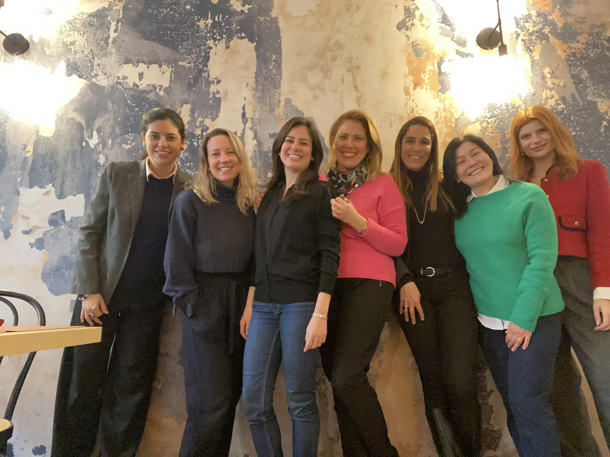
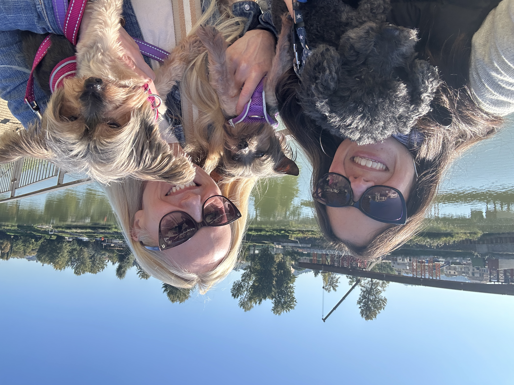
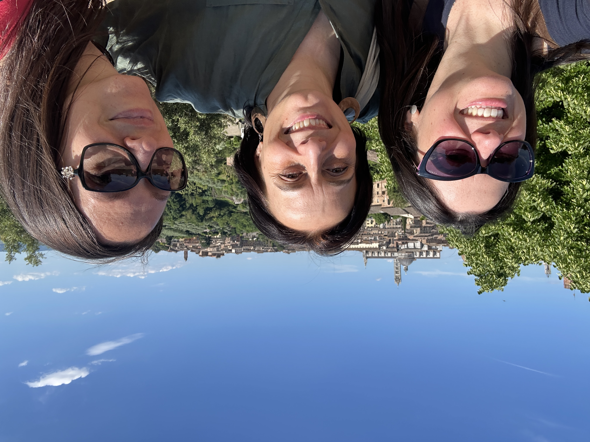

I have been an expat for most of my life. I was born in Brazil and left at 15 for England, never to return to live in my own country. I've since lived in France and now Italy, which means that after a childhood with the same house, the same friends, the same family all around me — my world was turned upside-down forever at the age of fifteen. Three times I had to start from zero: build friendships from scratch, rebuild a sense of belonging, and create a life somewhere new. Each time, I learned something more about what it takes.
The most important thing I learned? Friendships aren't a nice addition to expat life. They are the foundation of it.

The openness factor
Something I notice consistently in my counselling practice is the difference between expats who adapt well and those who struggle — and it rarely comes down to language skills or practical preparation. It comes down to openness.
I once had a client who had been in Florence for only two weeks before she had to return to the US briefly for a few days. When she came back, she told me it already felt like home. Two weeks in. The reason? From the moment she arrived, she and her family had thrown themselves into life: signing the children up for activities, saying yes to every invitation, introducing themselves to every family they met. They were still jet-lagged when they started. They hadn't settled in. They didn't wait until they felt ready — because they knew there was no such thing as ready.
Contrast this with another client who had moved permanently and was finding it hard. When I asked if she'd like to be introduced to some families, she said she'd rather wait — school was starting soon anyway. The problem with waiting is that isolation compounds. Once unhappiness sets in, it colours everything. You stop seeing possibilities and start seeing problems. Your starting point drops, and it takes much more energy to climb back up.
You don't have to feel ready to reach out. In fact, the reaching out is often what makes you feel ready.
Making friends as an adult
There is something genuinely freeing about making friends as an adult abroad. You get to choose more carefully. You don't have to put up with dynamics that don't serve you. You start with a clean slate.
One thing I always tell people: don't fall into the common language trap. It is enormously comforting to find someone who speaks your mother tongue when you're living in a foreign country — but shared language doesn't mean shared values. The family from a completely different country, with whom you have to speak a third language, might be a far better fit. What you're looking for is someone whose company genuinely nourishes you. That can come from anywhere.
The other thing I'd say is this: it takes effort, and that's okay. You have to say yes to invitations even when you're tired, even when you're not sure. You have to put yourself out there — as my mother used to tell me, and as I now tell my clients. It can feel exposing, especially if you're already carrying the weight of adaptation. But the investment pays off in ways that are hard to overstate.

When they leave
One of the hardest parts of expat friendships is that they end. Not always because of conflict or distance of feeling — but because someone's posting finishes, a job opportunity comes up elsewhere, life moves on. You've spent years with this person. You know their birth stories, their parents, the way they take their coffee. You've cooked for each other. And then one day they tell you they're leaving.
It hurts. It is a genuine grief, and I think it's important to name it as that rather than brush it away with "we'll stay in touch" or "it's not like a death." Sometimes it does feel like a death. And it takes time — real time — to find your footing again afterwards.
I experienced this acutely when my closest friend in France left. She had been my anchor there, the person I spoke to every day. When she went, I was devastated. What I discovered in time, though, was that her leaving made space — space for new friendships that turned out to be much more reciprocal, relationships I've kept to this day. Grief and growth are not opposites. They often travel together.

Friends across time and distance
One of the things I treasure most about a life lived across countries is that I have friends in all of them. My friends from Brazil, from England, from France, from Italy — they have never met each other, which still strikes me as strange, yet they know about each other through me and through the stories I carry from each place.
There is something profound about that kind of friendship — one that survives geography and time zones and years of different lives. It tells you that connection, real connection, isn't contingent on proximity. What it does require is tending. A message, a voice note, a call. Not because it's obligatory, but because these people matter, and matter requires attention.
Why it matters for your wellbeing
When you move abroad, you lose your entire support ecosystem almost overnight. The family nearby, the friends you've known for decades, the GP who knows your history — gone. Adapting to this is one of the most underacknowledged psychological challenges of expat life, because from the outside it looks like adventure, and adventure is supposed to feel good.
But human beings are wired for belonging. Isolation isn't just uncomfortable — it's genuinely harmful to mental health over time. Friendships, in the expat context, don't just make life more enjoyable. They replace the safety net that most people take for granted. They become your aunties, your brothers, your cousins. They are the people who notice when something is wrong, who show up with food when you're ill, who make your children feel like they have a family here too.
I don't know what my life in Italy would look like without my friends. Probably very small. I also know, from the work I've done with hundreds of expats over the years, that loneliness and isolation are among the most common threads running through the struggles people bring to counselling. Not loneliness for lack of company — but loneliness for lack of real, nourishing connection.
If that's where you are right now, I want you to know: it doesn't have to stay that way. Building connection takes courage and time, but it is possible. And if the weight of it feels too heavy to carry alone, that's exactly what I'm here for.